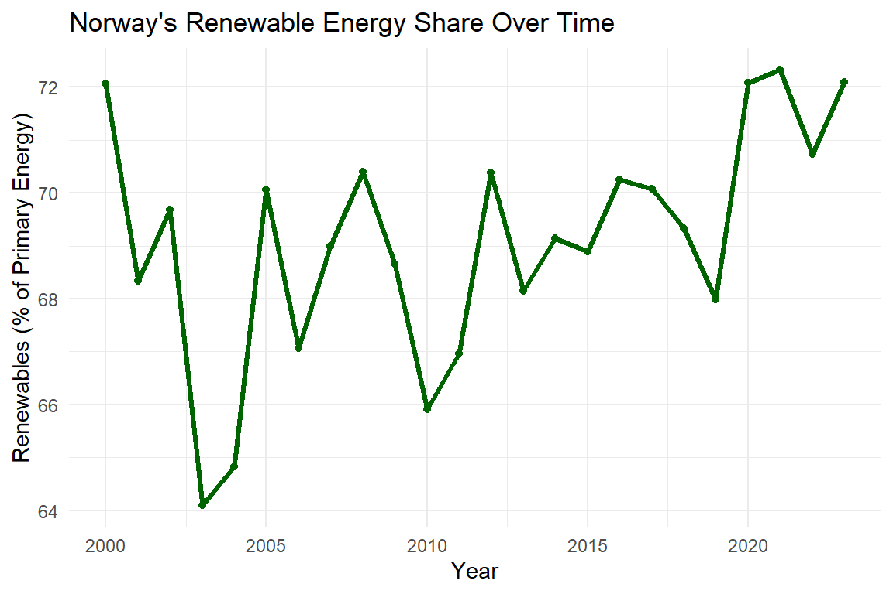

| Country | Code | Year | Renewables (%) |
|---|---|---|---|
| Norway | NOR | 2023 | 72.09110 |
| Sweden | SWE | 2023 | 53.89018 |
| Brazil | BRA | 2023 | 50.33141 |
| Denmark | DNK | 2023 | 42.73486 |
| New Zealand | NZL | 2023 | 42.26695 |
| Austria | AUT | 2023 | 40.08019 |
| Switzerland | CHE | 2023 | 38.32534 |
| Portugal | PRT | 2023 | 36.04341 |
| Finland | FIN | 2023 | 35.93626 |
| South and Central America (EI) | NA | 2023 | 35.39018 |
Global Renewable Energy Leaders in 2023
Executive summary
This report investigates the top 10 countries with the highest renewable energy share in 2023 and global trends in energy transitions. It further analyzes the sources of renewable energy in the leading country. The analysis is conducted using reliable data from Our World in Data. Among these countries, Norway stands out as a global leader with 72.09% of its primary energy coming from renewable sources. The findings offer valuable insight to effectively implement national approaches that could transform sustainable energy transitions worldwide.
Introduction
The global energy landscape has transformed rapidly in the last few decades. Many countries are undergoing a major shift toward adopting renewable sources such as hydropower, wind, and solar in response to the challenges of climate change and resource sustainability. Renewable energy now plays an important role as an alternative source that helps to reduce reliance on fossil fuels and mitigate greenhouse gas emissions.
Throughout the report, global renewable energy trends are identified, with a focus on the top 10 countries with highest proportion of renewable energy in total energy consumption in 2023. Norway leads the way, with roughly 72% of primary energy sourced from renewable. Sweden and Brazil are also undergoing significant transitions, with 53.9% and 50.3% renewable shares, respectively.
A deeper analysis on Norway has been conducted to better understand how a developed country manages its energy infrastructure achieving a high level of renewable integration. Understanding these factors behind Norway’s performance can be beneficial for planning and improving renewable energy policies and strategies that could be adapted to different regional and national contexts. This analysis aims to provide a useful insight that can guide future energy transitions globally.
Methodology
To identify the global leaders in renewable energy share, we used the publicly available dataset from Our World in Data, which includes annual records of renewable energy share by country from 1965 to 2023.
We filtered the dataset to focus exclusively on 2023 and excluded aggregated regions (e.g., World, Europe, Asia), allowing us to rank individual countries by their share of primary energy from renewables.
Table 1 lists the top 10 countries with the highest renewable energy share in 2023, and Figure 1 presents a bar chart for direct visual comparison.
To understand why Norway ranks highest globally, we analyzed its national renewable energy composition using a second dataset on electricity generation by source. We examined hydropower, wind, solar, and bioenergy to assess their respective contributions. This breakdown (Table 2 and Figure 2) shows Norway’s strong dependence on hydropower, which contributes over 90% of its renewable electricity output.
To complement Norway’s national breakdown, we further compared its hydropower generation to other global producers. Although Norway relies heavily on hydropower as a share of its energy mix, Figure 3 reveals that its total generation is also globally significant—enabling a clearer comparison between scale and proportion in renewable leadership.
Results
The analysis revealed that in 2023, Norway led globally in renewable energy adoption, with 72.09% of its primary energy coming from renewable sources, as shown in Table 1. Sweden (53.9%) and Brazil (50.3%) followed closely, highlighting strong national commitments to clean energy transitions.
Figure 1 visualizes these rankings, with Norway’s share standing distinctly above the rest of the top 10. This outperformance reflects long-term national investments and natural hydroelectric potential.
To understand this further, Table 2 and Figure 2 show that Norway’s 2023 electricity mix was over 90% hydropower, supported by modest wind output and minimal solar and bioenergy contributions.
Crucially, Figure 4 illustrates that Norway’s leadership is not new—it has maintained a renewable share above 60% for over two decades. This trend reinforces the country’s sustained commitment to renewable development through stable policy, investment, and infrastructure planning.
Overall, these results demonstrate that top-performing countries combine favorable geography with long-term national strategies. Norway exemplifies how consistent planning and natural resource optimization can produce a globally leading clean energy profile.

Discussion and Conclusion
Norway’s top ranking in renewable energy share is not incidental—it reflects decades of strategic investment in hydroelectric infrastructure, supported by favorable geography and a stable policy environment. The country’s energy profile, dominated by hydropower, illustrates how natural endowments can be effectively leveraged to transition away from fossil fuels.
However, this reliance on a single dominant source introduces potential vulnerabilities. Climate variability, such as droughts or shifting precipitation patterns, could significantly impact hydroelectric generation. Furthermore, despite its leadership, Norway’s use of wind, solar, and bioenergy remains minimal, indicating untapped potential for diversification.
The global comparison in hydropower generation reinforces Norway’s substantial absolute output relative to its size. This combination of high renewable share and high volume is rare among countries and highlights the effectiveness of long-term, resource-aligned energy planning.
In conclusion, Norway’s case exemplifies how geographic advantages, when matched with consistent national policy and infrastructure investment, can result in world-leading performance in renewable energy integration.
Recommendations
- Diversify energy sources: Invest in wind and solar to reduce overreliance on hydropower.
- Modernize energy infrastructure: Improve grid flexibility to integrate more variable renewables.
- Export expertise: Share Norway’s policy, regulatory, and engineering frameworks with other nations.
- Support adaptive policy: Prepare for climate risks by developing redundancy and storage solutions.
References
Our World in Data. (2024). Renewable energy data explorer. Retrieved from https://ourworldindata.org/renewable-energy
Our World in Data. (2024). Hydropower generation by country. Retrieved from https://ourworldindata.org/grapher/hydropower-consumption